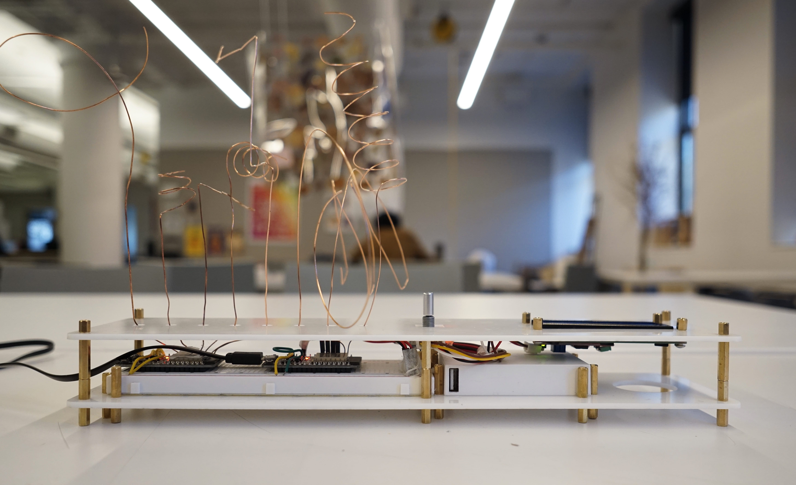

EMF Controller
Overview
We are surrounded by electrical devices, which operate at certain frequencies. These electrical devices have distinct electromagnetic signatures, which can be detected by measuring changes in the environmental electromagnetic field. This device uses multiple antennas to detect the changes in the electrical field around it.
The intent with this device was to use changes in electromagnetic fields as an input, much like a theremin. With pattern recognition algorithms, or machine learning, the disturbances could be used to associate interactions with certain actions. For example, waving a hand across could be identified as a unique interactions.

The EMFController uses 8 antennas and a rotary encoder to track changes in the EMF around it and wirelessly sends data through UDP over WiFi. However, due to the chaotic nature of EMF disturbances, this device works slightly differently from other regular controllers or MIDI devices. The chaotic nature of EMF disturbances are a feature, not a bug. The intention is not to provide consistent or useful data all the time. Rather, it opens up the possibility of using this otherwise hidden spectrum as an input medium.
Although the controller can fairly consistently detect the presence of a human near it, it’s even better at detecting electric impulses, such as those emitted by AC current, at wall outlets or larger appliances. This is an affordance which can be used to great effect, especially with the use of custom devices built to emit these signals, or using the controller near these impulses.
The inclusion of a rotary encoder is a useful one, as it allows for the inclusion of an ever expanding number of additional control variables. This is used to debug, and control the sensitivity of the antenna input. With further work, this can easily be used to control various input channels.
The LCD screen displays the control variables of the antenna and the rotary encoder which makes it possible to use controller without having to create a separate dashboard.
The antennas are shaped in a variety of different designs, which creates intercepts at all sorts of angles. The antennas hang loosely, with the intention of encouraging the user to change their form as required.
The controller is created with 2 white acrylic sheets with brass M3 spacers holding the structure together. The modular nature of the spacer heights allow for the creation of structural supports without having to create additional holes in the acrylic. The device also has a cutout for a speaker on the bottom, in the case that the user would like to expand the capabilities of the device. It uses 2xESP32s, a 16x02 LCD display, rotary encoder and a USB battery.
Rotary Encoder provides additional input
M3 Spacers hold the case together
Top-down view
Rotary Encoder and LCD 1602
Dual ESP32 Setup
Rotary Encoder, LCD, and USB Battery